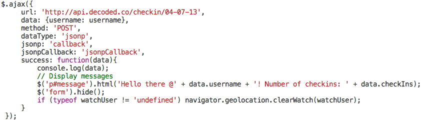

Decoded API Documentation
A Quick Recap on Servers
When you use the internet to login to your Facebook account your browser, (for example Google Chrome), will send an http request for your Facebook homepage to the Facebook servers. The Facebook servers will respond by sending an http response containing the HTML text for your homepage to the browser to display. All of the internets content is stored on servers across the world. This content can be accessed through a web browser from anywhere across the globe as long as you are connected to the internet.

What is Decodeds API?
Decodeds API is a file located on Decodeds server. All the data from each student app created during your session is stored in a datastore on Decodeds API - this means students can access their apps data from anywhere in the world as long as they are on the internet.
What Data is Stored?
Your app asks users to input their Twitter username and press return, it then displays their username and the number of times they have checked in. This means that usernames and their corresponding number of checkins have to be recorded - they are recorded and stored in a datastore in Decodeds API.
How is this Data Sent to the API?
When you enter your Twitter username and press return on your keyboard the web browser sends a post request to a datastore in Decodeds API. Check out the code below - note the username and URL are both sent in the post request. You can think of the URL like a postal address on the front of an envelope - it directs the post request to the correct location on Decodeds server; the username is like the content within the envelope- it is stored in the datasore on Decodeds API.
How is the data stored in the API
The data is stored in a JSON format, take a look at the example below.
{
decodedco: 1,
johnridpath: 2,
kathrynparsons: 3,
aliblackwell: 4
}
The first time someone checks into one of the apps created during your session a new datastore will automatically be created - this initial datastore will then be used to store the data for everyones apps. As noted above, the URL in the post request (follow link: http://api.decoded.co/checkin/04-07-13) points to the datastore which displays usernames and their corresponding number of checkins for all the apps in your session. You can expand this URL to look at the data of a particular user by adding for example ?username=kathrynparsons onto the end of the URL (http://api.decoded.co/checkin/04-07-13?username=kathrynparsons).
How does your Page Update its Content without Refreshing
In your web app the data is sent to the server using jQuerys AJAX method (follow link for further documentation: http://api.jquery.com/jQuery.ajax/). AJAX can send data to and retrieve data from the server without having to refresh the page.